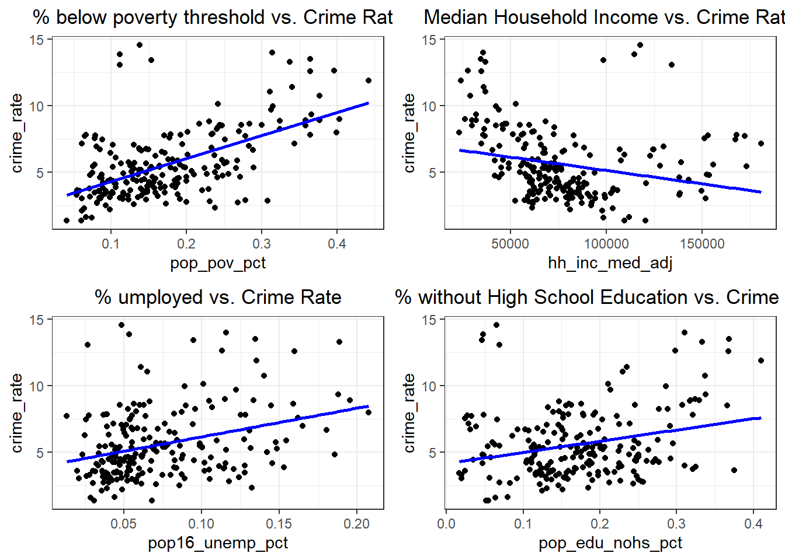
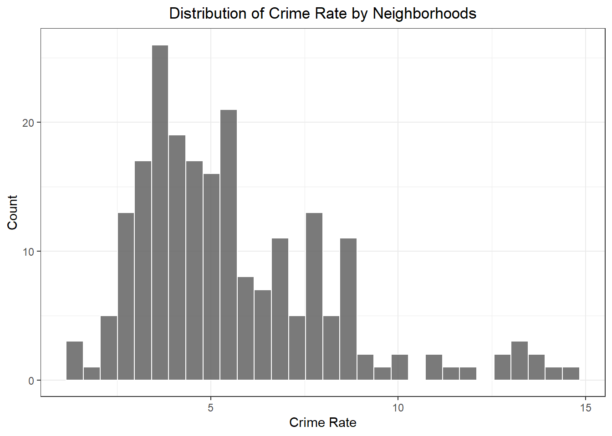
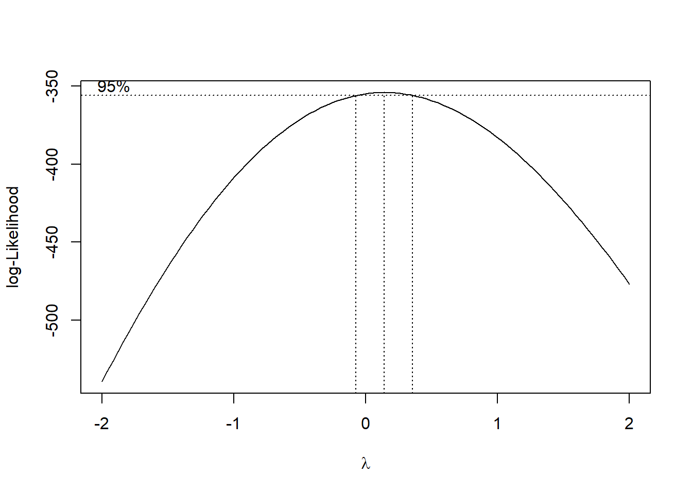
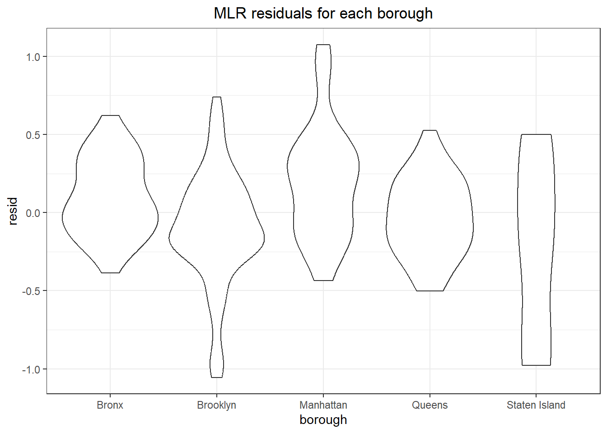

We are interested in exploring whether socioeconomic factors are associated or can be used as predictors to assess crime rate. Since our NYPD complaint dataset only contains individual complaints, we utilized a socioeconomic indicator dataset from NYU Furman Center to gather population data for each borough and neighborhood.
To better conduct regression analysis, we have calculated the crime rate for each neighborhood as the following:
Crime Rate = (Total number of complaints in a neighborhood in a given year / Total population in a neighborhood in a given year) * 100,000
df_nypd = read_csv("https://www.dropbox.com/scl/fi/kf2zk4t1onxzm2vo3lpkq/NYPD_Complaint_Data_Historic.csv?rlkey=ly36vi9v66sno80eir6rohlwn&dl=1", na = "(null)") |> # some values are coded as "(null)" in the df; rewrite them as NA
janitor::clean_names()
#Reading in the dataset that map each precinct to a neighborhood, for further SES analysis
prec_neighbor = read_csv("data/nyc_prec_neighborhood.csv")
#Merging `prec_neighboor` with NYPD dataset, conducting more data cleaning. The resulting `nypd_ses_df` only contains variables of interest for SES analysis. `nypd_ses_df` now contains neighboorhood information, as well as other necessary data from the original master data
nypd_ses_df = df_nypd |>
select(cmplnt_num, cmplnt_fr_dt, addr_pct_cd, crm_atpt_cptd_cd, law_cat_cd, susp_age_group, susp_race, susp_sex, vic_age_group, vic_race, vic_sex, ofns_desc, pd_desc) |>
rename(precinct = addr_pct_cd) |>
mutate(cmplnt_fr_dt = as.Date(cmplnt_fr_dt, format = "%m/%d/%Y"),
year = format(cmplnt_fr_dt, "%Y")) |>
left_join(prec_neighbor, by = "precinct")
#Reading in the SES data for demographics information for each precinct/neighboorhood, and only keeping the relevant SES indicators. `neighbor_ses` df includes information on population, income, umemployment, poverty, education, and racial factors for every neighborhood.
neighbor_ses = readxl::read_excel("data/neighorhood_indicators.xlsx", sheet = "Data") |>
janitor::clean_names() |>
filter(region_type == "Sub-Borough Area") |>
rename(neighborhood = region_name) |>
select(neighborhood, year, pop_num, hh_inc_med_adj, pop16_unemp_pct, pop_edu_collp_pct, pop_edu_nohs_pct, pop_pov_pct, pop_race_asian_pct, pop_race_black_pct, pop_race_hisp_pct, pop_race_white_pct, pop_foreign_pct) |>
filter(year %in% c(2017, 2018, 2019, 2021)) #2020 and 2022 data missing
neighbor_rent = readxl::read_excel("data/neighorhood_indicators.xlsx", sheet = "Data") |>
janitor::clean_names() |>
filter(region_type == "Sub-Borough Area") |>
rename(neighborhood = region_name) |>
filter(year == "2017-2021") |>
select(neighborhood, gross_rent_0_1beds, gross_rent_2_3beds)
# Now, calculate the crime rate for every precinct. Crime rate is calculated by dividing the number of crimes committed per neighborhood over the total population of that neighborhood, then times 100,000. Then merge the crime rate data with other relevant socioeconomic data. We focus only on the 2021 data. `ses_df` contains crime rate and other SES data per neighborhood, by year
ses_df = nypd_ses_df |>
group_by(year, borough, neighborhood) |>
summarise(crime_num = n())
ses_df = ses_df |> merge(neighbor_ses, by = c("year", "neighborhood")) |>
mutate(crime_rate = (crime_num/pop_num) * 100,000) |>
left_join(neighbor_rent, by = "neighborhood")We start by visualizing potential association between factors that we hypothesize to impact crime rate, these are poverty, unemployment, income, and education.
eda_plot1 = ses_df |> ggplot(aes(x = pop_pov_pct, y = crime_rate)) +
geom_point() +
geom_smooth(method = "lm", se = FALSE, color = "blue") +
labs(title = "% Below poverty threshold vs. Crime Rate") +
theme(text = element_text(size = 9))
eda_plot2 = ses_df |> ggplot(aes(x = hh_inc_med_adj, y = crime_rate)) +
geom_point() +
geom_smooth(method = "lm", se = FALSE, color = "blue") +
labs(title = "Median Household Income vs. Crime Rate") +
theme(text = element_text(size = 9))
eda_plot3 = ses_df |> ggplot(aes(x = pop16_unemp_pct, y = crime_rate)) +
geom_point() +
geom_smooth(method = "lm", se = FALSE, color = "blue") +
labs(title = "% Umployed vs. Crime Rate") +
theme(text = element_text(size = 9))
eda_plot4 = ses_df |> ggplot(aes(x = pop_edu_nohs_pct, y = crime_rate)) +
geom_point() +
geom_smooth(method = "lm", se = FALSE, color = "blue") +
labs(title = "% No High School Education vs. Crime Rate") +
theme(text = element_text(size = 9))
combined_eda_plot = gridExtra::grid.arrange(
eda_plot1, eda_plot2, eda_plot3, eda_plot4, ncol = 2)
ggsave(file.path("Crime_Rate_Analysis_files", "combined_eda_plot.png"), combined_eda_plot, width = 12, height = 8, units = "in")It is observed that there is a stronger positive association between percentage of poverty population with crime rate; a weaker positive association between unemployment and lack of education with crime rate, and a negative association between median household income and crime rate.
Let’s first visualize the distribution of crime rate:
ses_df |> ggplot(aes(x = crime_rate)) +
geom_histogram(alpha = 0.8, color = "white") +
labs(
x = "Crime Rate" ,
y = "Count",
title = "Distribution of Crime Rate by Neighborhoods")
Since the data is slightly right-skewed, we can use the Box-Cox Transformation to transform the data for linear fit
initial_fit = lm(crime_rate ~ pop_pov_pct + hh_inc_med_adj + pop16_unemp_pct + pop_edu_nohs_pct + pop_race_asian_pct + pop_race_black_pct + pop_race_hisp_pct + pop_race_white_pct + pop_foreign_pct, data = ses_df)
MASS::boxcox(initial_fit)
From the Box-Cox Transformation, log-transformation seems to be the best option. We will perform a log transformation on crime rate and use this as the predictor.
To achieve the best model, we will use a “manual” backward elimination approach: first by fitting a MLR with all possible factors, and gradually remove factors that are not significant.
ses_df = ses_df |> mutate(
log_crime_rate = log(crime_rate)
)
log_fit = lm(log_crime_rate ~ pop_pov_pct + hh_inc_med_adj + pop16_unemp_pct + pop_edu_nohs_pct + pop_race_asian_pct + pop_race_black_pct + pop_race_hisp_pct + pop_race_white_pct + pop_foreign_pct, data = ses_df)
broom::tidy(log_fit) |> knitr::kable(digits=3)| term | estimate | std.error | statistic | p.value |
|---|---|---|---|---|
| (Intercept) | 0.592 | 1.018 | 0.582 | 0.561 |
| pop_pov_pct | 5.315 | 0.565 | 9.403 | 0.000 |
| hh_inc_med_adj | 0.000 | 0.000 | 6.775 | 0.000 |
| pop16_unemp_pct | -1.384 | 0.748 | -1.851 | 0.066 |
| pop_edu_nohs_pct | -1.716 | 0.640 | -2.681 | 0.008 |
| pop_race_asian_pct | -0.331 | 1.041 | -0.318 | 0.751 |
| pop_race_black_pct | 0.130 | 1.007 | 0.129 | 0.897 |
| pop_race_hisp_pct | 0.296 | 0.969 | 0.306 | 0.760 |
| pop_race_white_pct | -1.050 | 0.985 | -1.067 | 0.287 |
| pop_foreign_pct | 0.029 | 0.290 | 0.099 | 0.921 |
According to the MLR fit result, three factors are significant: percentage of population below poverty line, median household income, and percentage of population above 25 years old without high school degree.
We will fine tune our model based on this three factors.
log_fit_optimized = lm(log_crime_rate ~ pop_pov_pct + hh_inc_med_adj + pop_edu_nohs_pct, data = ses_df)
broom::tidy(log_fit_optimized) |> knitr::kable(digits=3)| term | estimate | std.error | statistic | p.value |
|---|---|---|---|---|
| (Intercept) | 0.452 | 0.198 | 2.281 | 0.024 |
| pop_pov_pct | 4.761 | 0.455 | 10.473 | 0.000 |
| hh_inc_med_adj | 0.000 | 0.000 | 3.866 | 0.000 |
| pop_edu_nohs_pct | -0.450 | 0.493 | -0.914 | 0.362 |
As we removed many insignificant predictors, education factor lost its significance as well. Our final model will only include two predictors: percentage of population below poverty line and median household income. The below is our final model for prediction of crime rate of a neighborhood in NYC:
log_fit_optimized = lm(log_crime_rate ~ pop_pov_pct + hh_inc_med_adj, data = ses_df)
final_MLR = broom::tidy(log_fit_optimized) |> knitr::kable(digits=3)
final_MLR| term | estimate | std.error | statistic | p.value |
|---|---|---|---|---|
| (Intercept) | 0.343 | 0.159 | 2.167 | 0.031 |
| pop_pov_pct | 4.644 | 0.436 | 10.654 | 0.000 |
| hh_inc_med_adj | 0.000 | 0.000 | 5.127 | 0.000 |
Both of these 2 predictors are significant. We can also check for multicollinearity of our optimized model. From the test below, we can see that multicollinearity is low between our two predictors and is within the acceptable range.
performance::check_collinearity(log_fit_optimized) |>
knitr::kable(digits=3)| Term | VIF | VIF_CI_low | VIF_CI_high | SE_factor | Tolerance | Tolerance_CI_low | Tolerance_CI_high |
|---|---|---|---|---|---|---|---|
| pop_pov_pct | 2.384 | 1.972 | 2.972 | 1.544 | 0.419 | 0.337 | 0.507 |
| hh_inc_med_adj | 2.384 | 1.972 | 2.972 | 1.544 | 0.419 | 0.337 | 0.507 |
To assess how well our model can explain crime rate, we can run a regression diagnostic by plotting residuals for each borough:
ses_df |>
modelr::add_residuals(log_fit_optimized) |>
ggplot(aes(x = borough, y = resid)) + geom_violin() +
labs(title = "MLR residuals for each borough",
xlab = "Borough",
ylab = "Residuals")
We can further inspect our model by plotting residuals against fitted values
ses_df |>
modelr::add_residuals(log_fit_optimized) |>
modelr::add_predictions(log_fit_optimized) |>
ggplot(aes(x = pred, y = resid, color = borough)) + geom_point() +
labs(title = "MLR residuals against fitted value",
xlab = "Residuals",
ylab = "Fitted Values")From the two diagnostics plots above, we can see that the residuals are roughly centered around zero, and are relatively normal. This would indicate that our model is a relatively good fit.
From this model, we conclude that the crime rate for a specific neighborhood is highly associated with the percentage of people below poverty line, and the median household income. From diagnostic analysis, the multicollinearity between the 2 factors are low, and our model is a relatively good fit by inspecting residuals and fitted values.
There are limitations regarding this MLR model. Due to missing data and data processing complexities for huge dataset, the MLR model is based on the crime rate per neighborhood for 2017, 2018, 2019, and 2021 only. While we are able to gather more observations by combining the crime rate data from multiple years, this model does not consider changes from year to year - that is, the degree of association between certain socioeconomics factors and crime rate may differ from year to year. In addition, we recognize a better approach was to split the data into training and testing sets, so that we can test our fitted MLR model on data that has not been used to fit the data. Since we only have neighborhood-level crime rate data for 4 years, we don’t have a large enough dataset to split into training and testing, and we acknowledge this would be a better approach if we have more years of data available.